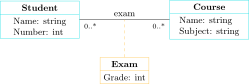

Definition
Attributes model properties local to one class; associations model properties that involve several classes. An association between classes and  is a mathematical relation between their sets of instances,
is a mathematical relation between their sets of instances,
- a role: the name of the part played by that class (
employeeinworks-inbetween Person and Company); roles are needed when both ends are the same class (parent-child); - a multiplicity : every object of the other end takes part in between
 and links (
and links (0..1,1,0..*,1..*); - navigability: an arrow saying which end can reach the other, which becomes a pointer or reference field in code.
An association attribute belongs to the link, not to either object: the grade of an exam is a property of the pair (student, course).
Picture

The grade is an attribute of the association: every link (student, course) has its own grade.
From diagram to code
A navigable end with multiplicity 0..1 becomes a pointer (C++) or a possibly-null reference (Java); 1 becomes a member or a non-null reference; 0..* becomes a container (std::vector, List<T>). An association attribute becomes a class of its own (Exam) holding the two ends.
Worked example
class Course;
class Exam { Student* s; Course* c; int grade; }; // association class
class Student {
std::string name; int number;
// 1 : enrolled-in (navigable)
Programme* programme;
std::vector<Exam*> exams; // 0..*: exam
};
Multiplicity 1 becomes a pointer that must never be null after construction,  a container, the association attribute a class of its own holding both ends.
a container, the association attribute a class of its own holding both ends.
Intuition
The multiplicities are the invariants the code must maintain. Writing them down first tells you which fields may be null and which collections may be empty.
Pitfall
A link is a pair, so the same pair cannot appear twice in an association: a student who takes the same course twice needs a different model (an Exam class with a date) rather than two links.